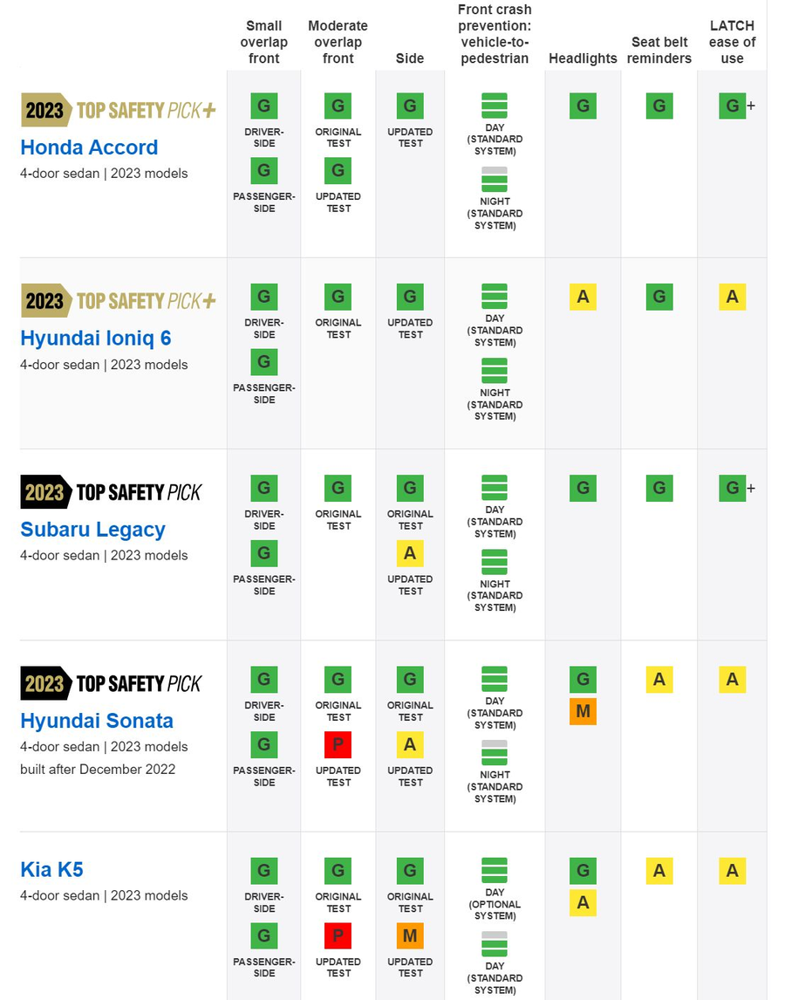
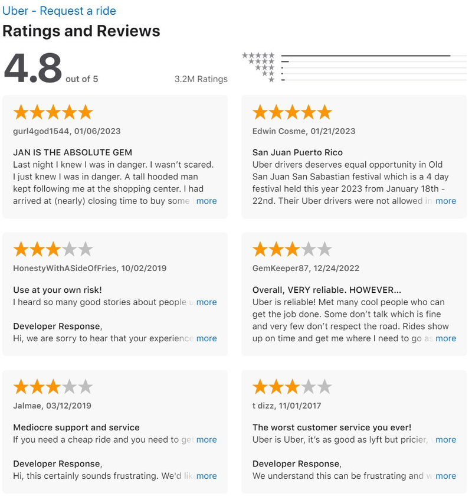
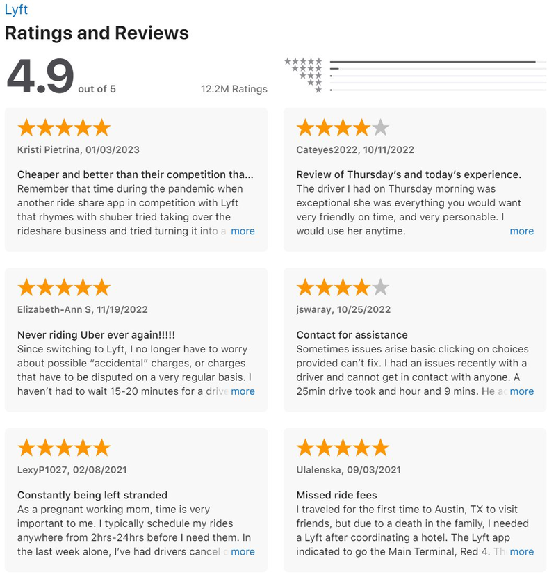
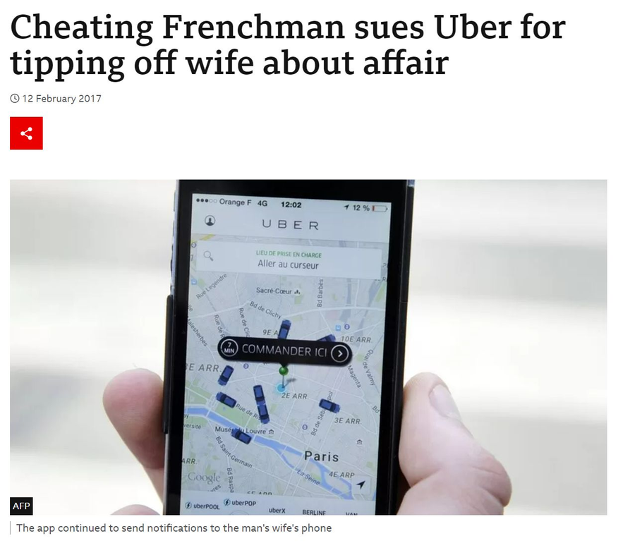
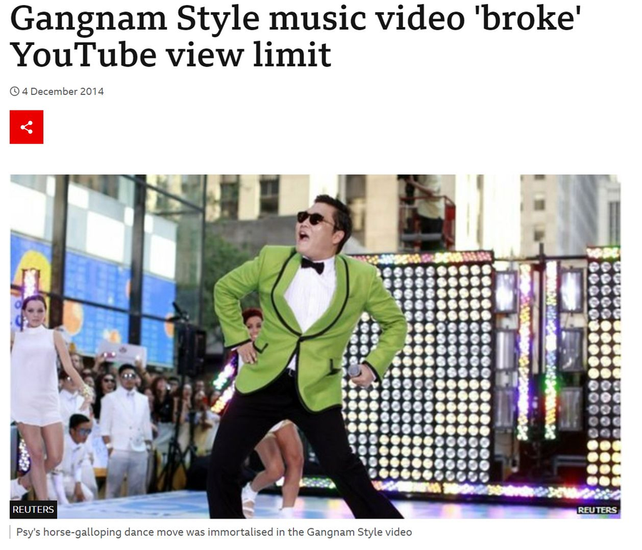
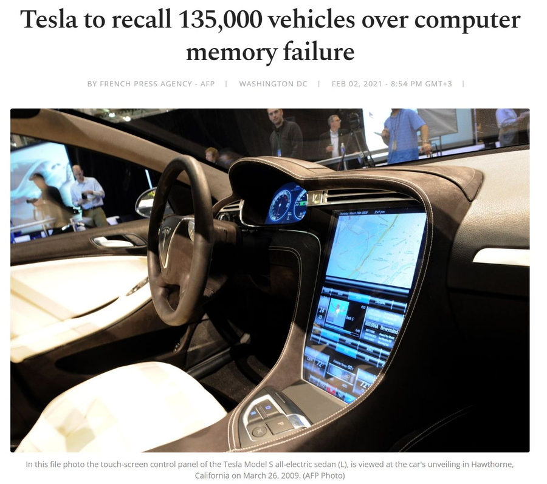
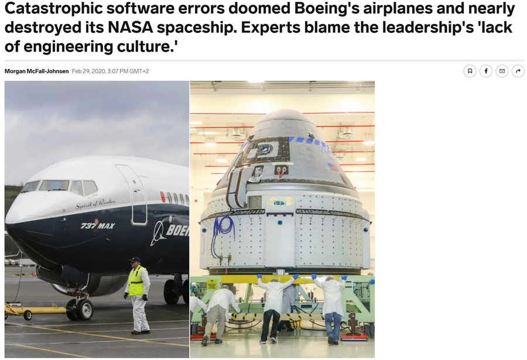
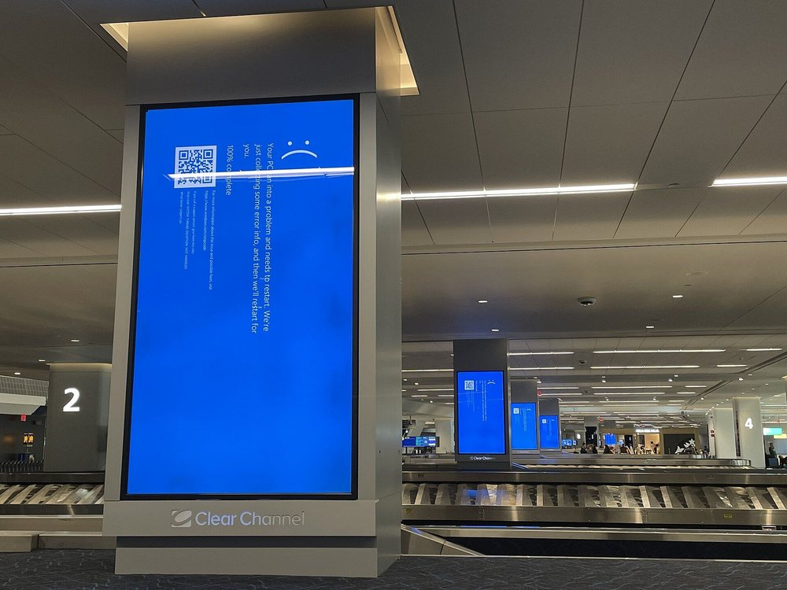

Why we test · Real-world failures · Cost of defects · Where bugs come from
→ next slide | ESC overview
1. Why test? — famous software failures
2. Consequences of software defects
3. Where do defects come from?
4. The cost of a defect over time
5. The goals of software testing

You already trust test results every day. The question is what happens when nobody runs them.


App store reviews are unstructured defect reports written by your users. They arrive too late and cost you the customer — but they are still evidence of quality.





Data breaches belong on the same list: T-Mobile 2022 (37M users) · Juspay 2021 (card data) · Yahoo 2014 (500M users).
Most failures are not "someone wrote a bad line of code". They are requirements that were never clear, and testing that started too late.
Every step of development has a moment where a human mistake becomes a defect.
Notice how few of these are "the developer wrote bad code". Most defects are born before anyone starts typing.
Coverage is the key metric: design test cases so that as much functionality as possible is exercised and as many problems as possible are found.
In your group, write up the failure you analysed in class: what happened, what the consequences were, which testing activity would have caught it, and at which stage the defect was introduced.
Full brief: Homework 2